NR-1
APRENDA O BÁSICO
DE SEGURANÇA DO TRABALHO!
SEGURANÇA DO TRABALHO
A Segurança do Trabalho é, antes de tudo, um cuidado com as pessoas. Ela busca garantir que cada trabalhador volte para casa com saúde e segurança, da mesma forma que chegou ao trabalho. Mais do que regras e normas, trata-se de respeito, empatia e valorização da vida. Quando uma empresa se preocupa com a segurança de seus colaboradores, ela mostra que entende a importância de cada um e reconhece que o trabalho só tem sentido quando feito em um ambiente seguro, humano e acolhedor.
Em caso de falta de segurança você pode comunicar a empresa, mas, caso nada seja feito, também pode denunciar diretamente ao governo por telefone. Basta ligar para o número 158, o canal oficial de atendimento do Ministério do Trabalho.
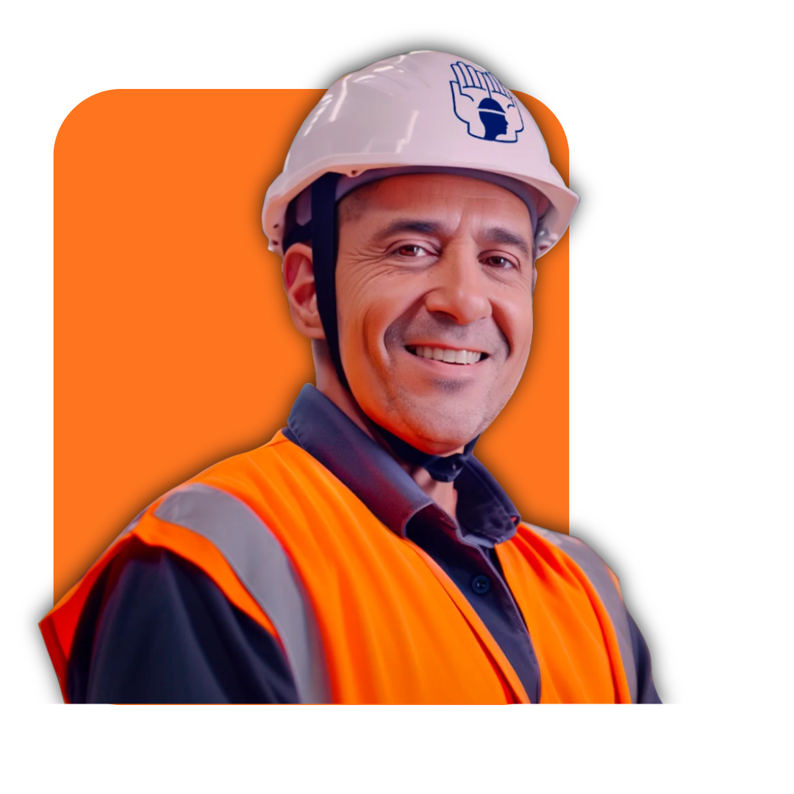
Comissão Interna de Prevenção de Acidentes (CIPA)
A CIPA atua na identificação de riscos, prevenção de acidentes e na promoção da saúde ocupacional. Ela envolve representantes eleitos pelos trabalhadores e indicados pela empresa, com ações contínuas de inspeção, treinamento e conscientização.
Participar da CIPA significa colaborar diretamente para um ambiente mais seguro reduzir riscos e preservar vidas.

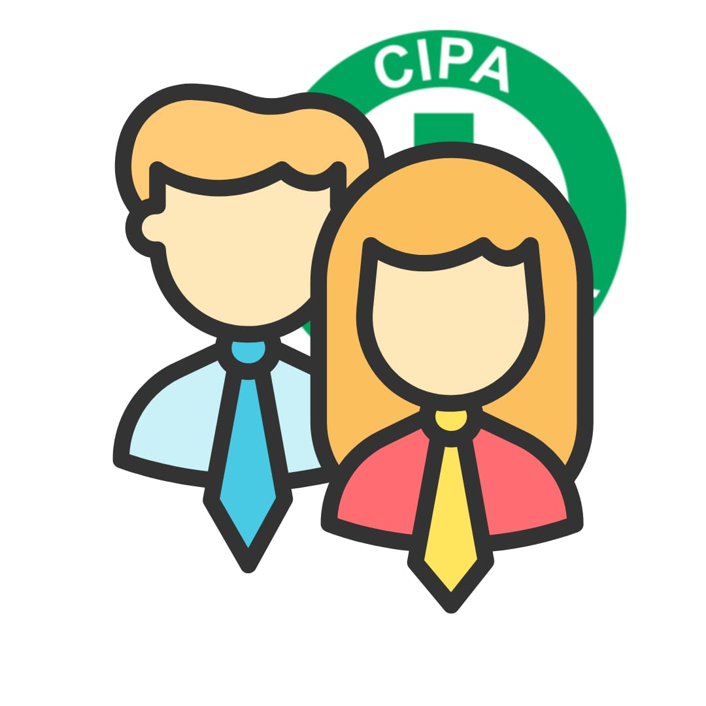
VOCÊ pode salvar vidas!
Com a ideia do nosso comitê simbólico
Um comitê é um grupo de pessoas formado para discutir, analisar e tomar decisões sobre um assunto específico.
Os comitês ajudam a organizar o trabalho e garantir que diferentes pontos de vista sejam considerados. Assim, tornam o processo de decisão mais eficiente e colaborativo.
A ideia do nosso comitê é a união de jovens aprendizes no ambiente de trabalho, orientando os demais alunos a ficarem atentos no ambiente de trabalho e conscientizar sobre os riscos.
Possíveis ACIDENTES
Acidentes Elétricos
Possíveis acidentes:
• Choques elétricos
• Queimaduras
• Parada cardiorrespiratória
• Incêndios
Formas de prevenção:
• Manter instalações elétricas em bom estado e dentro das normas.
• Utilizar EPI adequado (luvas e botas isolantes).
• Desligar a energia antes de realizar manutenções.
• Proibir o uso de fios desencapados ou improvisações.
Incêndios e Explosões
Possíveis acidentes:
• Queimaduras graves
• Asfixia pela inalação de fumaça
• Perda total de equipamentos e estruturas
Formas de prevenção:
• Armazenar substâncias inflamáveis de forma segura e sinalizada.
• Manter extintores de incêndio revisados e acessíveis.
• Promover treinamentos de evacuação e combate a incêndios.
Quedas no Mesmo Nível
Possíveis acidentes:
• Torções, escoriações e fraturas leves.
Formas de prevenção:
• Manter o ambiente limpo e organizado.
• Evitar pisos escorregadios e fios espalhados.
• Utilizar sapatos antiderrapantes.
Exposição a Agentes Químicos
Possíveis doenças:
• Intoxicações
• Dermatites
• Problemas respiratórios e neurológicos
Formas de prevenção:
• Uso de máscaras, luvas e aventais específicos.
• Instalação de sistemas de ventilação e exaustão.
• Armazenar produtos químicos de forma adequada, com rótulos e fichas de segurança.
Normas REGULAMENTADORAS
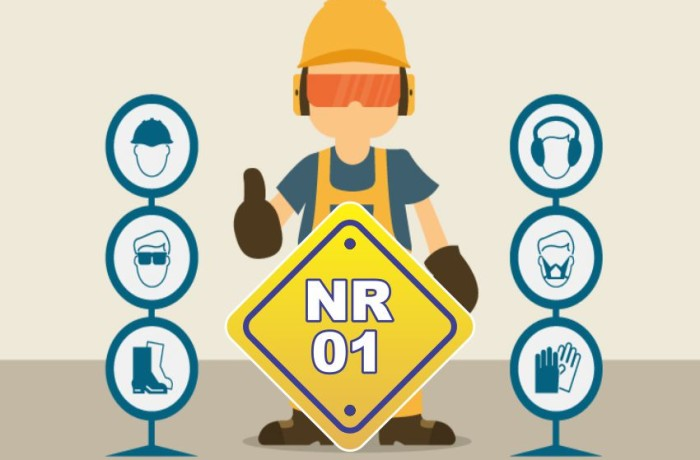
Disposições Gerais: base das demais normas; cria o PGR e define deveres de segurança.
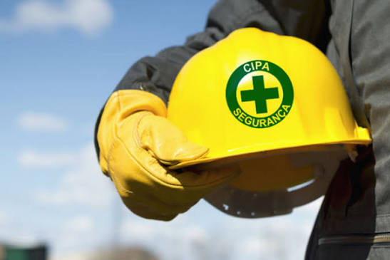
NR-5
CIPA: orienta a formação da comissão responsável pela prevenção de acidentes e assédio.
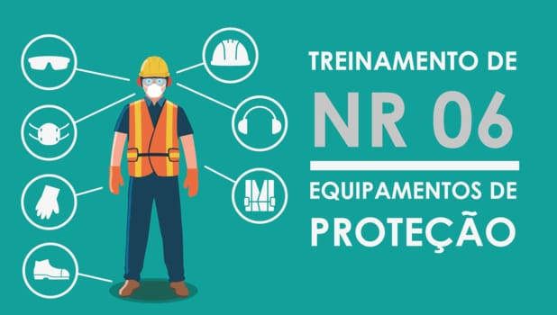
NR-6
EPI: trata do fornecimento e uso dos Equipamentos de Proteção Individual.
NR-7
PCMSO: cuida da saúde ocupacional por meio de exames médicos.
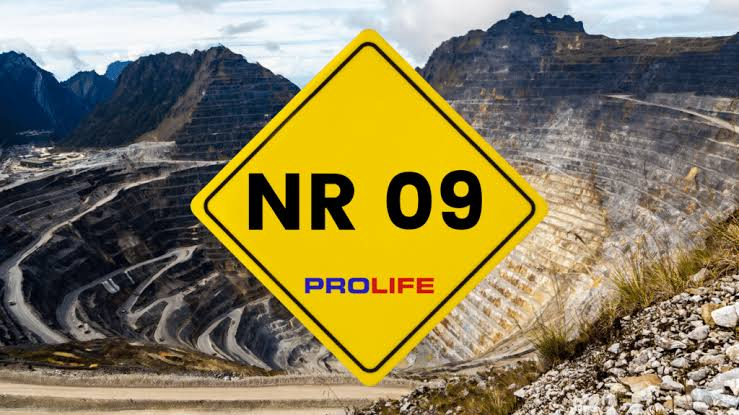
NR-9
Riscos Ambientais: controla agentes físicos, químicos e biológicos.
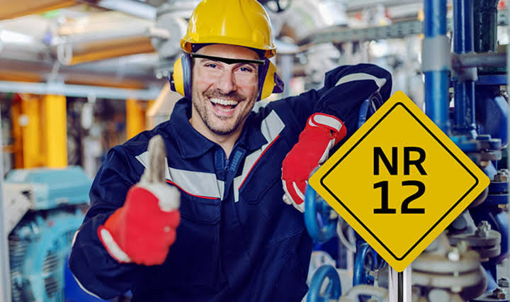
NR-12
Máquinas e Equipamentos: evita acidentes envolvendo máquinas.
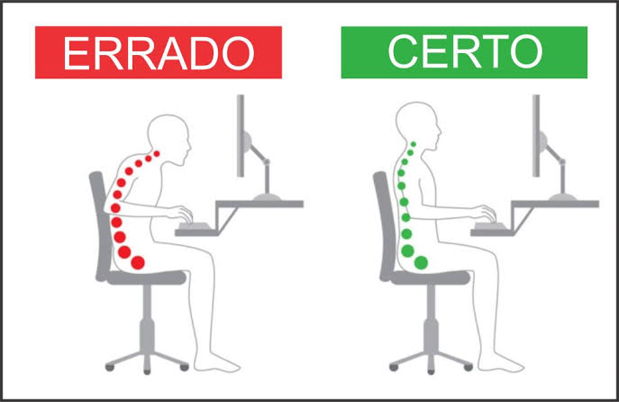
NR-17
Ergonomia: adapta o trabalho às características físicas e mentais do trabalhador.
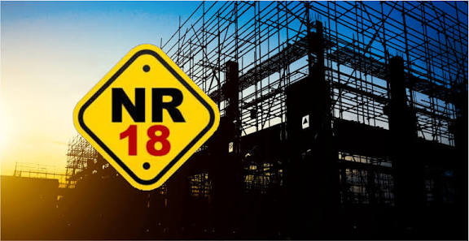
NR-18
Construção Civil: garante segurança em atividades de obras.
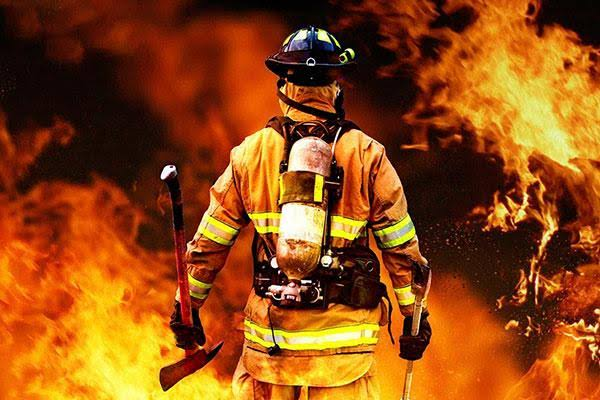
NR-23
Incêndio: trata da prevenção e combate a incêndios.
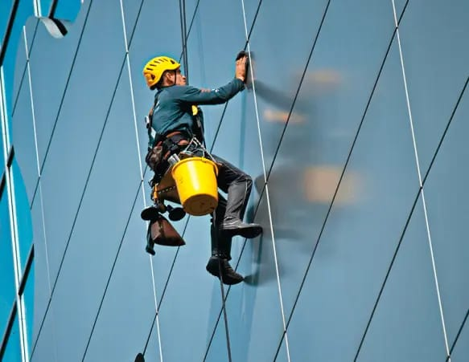
Nr-35
Trabalho em Altura: estabelece requisitos para trabalhos acima de 2 metros.
Inclusão JOVEM APRENDIZ
COMO SER INCLUÍDO
Para incluir o jovem aprendiz na segurança do trabalho, a empresa deve seguir uma série de procedimentos que combinam a capacitação teórica com a prática supervisionada. Isso garante que o aprendiz desenvolva a consciência e as habilidades necessárias para um ambiente seguro.
POR QUE É IMPORTANTE?
O jovem aprendiz deve receber orientações sobre o uso correto dos Equipamentos de Proteção Individual (EPIs), as regras de segurança e os procedimentos de emergência. Essas ações o ajudam a compreender a importância da prevenção de acidentes e a agir com responsabilidade. Além disso, o acompanhamento constante de um supervisor é indispensável para que ele realize suas tarefas de maneira segura, evitando situações que possam representar perigo.
Material EDUCATIVO
Contato
Entre em contato conosco para mais informações.
Gmail: senac.turma10amarela@gmail.com
Devs
Rafael Ferreira & Natan Santana
Créditos
Gabriel Da Gloria, Davi Rian, Kailan Silva, Luiz Henrique, Mel Damasceno & Thayla Santos